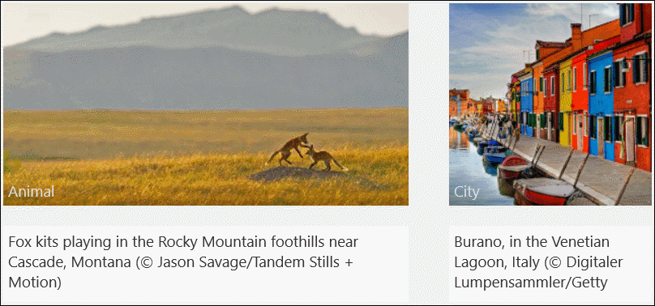

RotatorTile XAML Control (Archived)
Warning
This component has been archived and is not available in the current version of the Windows Community Toolkit.
While there are no immediate plans to port this component to 8.x, the community is welcome to express interest or contribute to its inclusion.
For more information:
Original documentation follows below.
The Rotator Tile Control is an ItemsControl that rotates through a set of items one-by-one. It enables you to show multiple items of data in a live-tile like way.
Syntax
<Page ...
xmlns:controls="using:Microsoft.Toolkit.Uwp.UI.Controls"/>
<controls:RotatorTile x:Name="Tile1"
Background="LightGray"
Direction="Up"
Width="400"
Height="200"
Margin="20"/>
Example Image

Properties
| Property | Type | Description |
|---|---|---|
| CurrentItem | object | Gets or sets the currently selected visible item |
| Direction | RotateDirection | Gets or sets the direction the tile slides in |
| ExtraRandomDuration | TimeSpan | Gets or sets the extra randomized duration to be added to the RotationDelay property. A value between zero and this value in seconds will be added to the RotationDelay |
| ItemsSource | object | Gets or sets the ItemsSource |
| ItemTemplate | DataTemplate | Gets or sets the item template |
| RotationDelay | TimeSpan | Gets or sets the duration for tile rotation |
Sample Project
RotatorTile Sample Page Source. You can see this in action in the Windows Community Toolkit Sample App.
Default Template
RotatorTile XAML File is the XAML template used in the toolkit for the default styling.
Requirements
| Device family | Universal, 10.0.16299.0 or higher |
|---|---|
| Namespace | Microsoft.Toolkit.Uwp.UI.Controls |
| NuGet package | Microsoft.Toolkit.Uwp.UI.Controls |